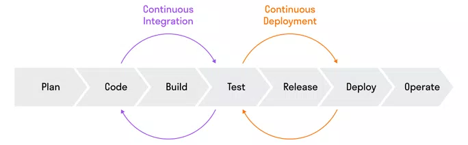

CI/CD — одна из практик DevOps.
CI/CD (Continuous Integration / Continuous Deployment) — практика по автоматизации сборки, тестирования и развертывания приложений.
DevOps (Development & Operations) — набор процессов и инструментов, которые помогают наладить технологические процессы и взаимодействие специалистов внутри команды.
Operations — операции, development — развитие или разработка.
Continuous Integration (CI) — процесс автоматического сбора кода из разных источников (например, Git-репозиториев), выполнения тестов и сборки приложения.
Это позволяет быстро выявлять возможные проблемы и обеспечивает стабильность продукта на всех этапах разработки.
Continuous Deployment/Delivery (CD) — процесс автоматического развертывания приложения на различных стадиях, включая тестовые, стейджинг и продакшен-среды.
Цель CD — обеспечить максимально быстрое и безопасное развертывание новых версий продукта без необходимости ручного вмешательства.
Команды используют практику CI/CD, чтобы уменьшить время между созданием кода и его развертыванием в прод, постоянно повышать качество продукта и делать его работу стабильной.
CI/CD включает семь этапов:
-
Plan — планирование. На этом этапе планируют разработку и поставку приложения, определяют требования и задачи проекта, распределяют ресурсы команды и ставят цели.
-
Code — написание кода. Разработчики пишут код для каждой части программного продукта и создают его функционал, комментируют и документируют код, проводят ревью кода.
-
Build — сборка. Система контроля версий собирает программный продукт из написанного кода, используя средства автоматической сборки; создает исполняемые файлы или пакеты для установки приложения.
-
Test — тестирование. Тестировщики проверяют собранный продукт. Они проводят разные виды тестирования, в том числе автоматизированное.
-
Release — релиз. Команда создает установочные пакеты, подписывает их цифровыми сертификатами и отдает продукт на проверку заказчику или тестовой группе пользователей. Если в продукте находят ошибки, то его отправляют на доработку.
-
Deploy — развертывание. Программное обеспечение устанавливается на реальной или тестовой среде, чтобы заказчики и конечные пользователи могли пользоваться продуктом.
-
Operate — эксплуатация. Продукт используется. Разработчики проверяют работу продукта, оптимизируют его производительность, обрабатывают возникающие ошибки, анализируют пользовательский опыт и планируют доработки продукта и разработку нового функционала.
